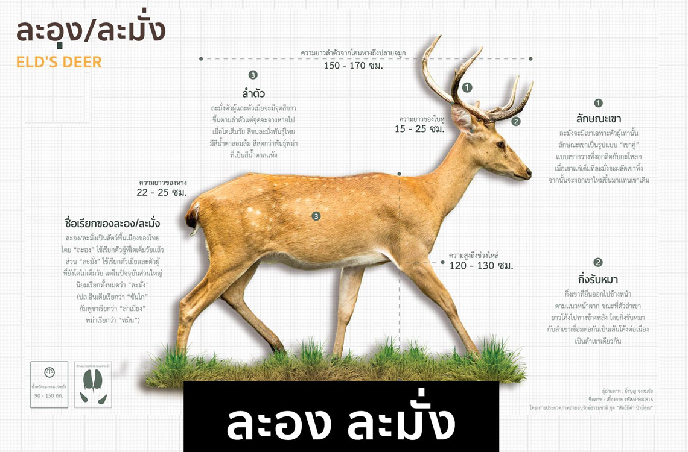
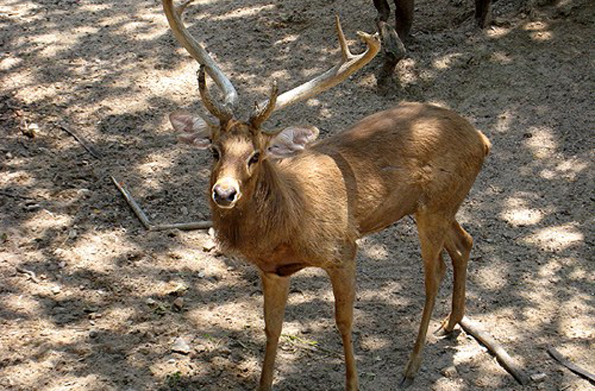

ละมั่ง
ชื่อไทย : ละอง, ละมั่ง
ชื่ออังกฤษ : Eld’s Deer, Brow-antlered Deer
ละอง หรือละมั่ง เป็นกวางพื้นเมืองของไทย ละอง ใช้เรียกตัวผู้ตัวเต็มวัย ละมั่ง ใช้เรียกตัวเมีย และตัวที่ยังไม่เต็มวัย แต่นิยมเรียกละมั่งเหมือนกันทั้งหมด ลำตัวมีขนละเอียดสีน้ำตาลแกมเหลือง ขนด้านบนมีสีแดงอมน้ำตาล ส่วนท้องมีสีขาว หรือสีครีม มีขนสีขาวรอบหู ตา และคาง ลำคอยาว ใบหูใหญ่ ตัวผู้มีขนาดใหญ่กว่าตัวเมีย ตัวผู้โตเต็มวัยมีขนหยาบยาวสีน้ำตาลเข้มบริเวณรอบคอ ละมั่งอายุน้อยจะมีลายจุดสีขาวตามตัว เมื่อโตขึ้นลายจุดจะหายไป แต่ในละมั่งเพศเมียตัวเต็มวัยบางตัวอาจยังปรากฏลายจุดจางๆให้เห็นอยู่ ละมั่งมีเขาเฉพาะเพศผู้ ลำเขาเป็นแกนกระดูกที่งอกติดกับกะโหลก หลังจากผสมพันธุ์แล้วจะผลัดเขาทิ้งไป เขาละมั่งจะมีกิ่งรับหมายื่นยาวออกไปข้างหน้าตามแนวหน้าผาก ขณะที่ตัวลำเขาโค้งยาวไปด้านหลัง โดยกิ่งรับหมากับลำเขาเชื่อมต่อกันตรงโคนเขา เป็นเส้นโค้งต่อเนื่องเป็นลำเดียวกัน ปลายเขางอกลับคล้ายตะขอและแตกแขนง
- 
-

- 
ละมั่ง มักจะอยู่รวมกันเป็นฝูงประมาณ 5-6 ตัว ในบางครั้งอาจเป็นฝูงถึง 50 ตัว มักอาศัยตามป่าเต็งรัง ป่าโปร่ง หรือทุ่งหญ้าใกล้แหล่งน้ำ ตัวผู้มักอาศัยตามลำพัง จะเข้ารวมฝูงเฉพาะในช่วงฤดูผสมพันธุ์ ละมั่งออกหากินช่วงเช้าและเย็น กลางวันมักจะนอนพักใต้ร่มไม้ บางครั้งตัวผู้อาจลงแช่ปลักบ้างในช่วงที่อากาศร้อน กินหญ้าและลูกไม้ ผลไม้ เป็นอาหารหลัก
ขอขอบคุณข้อมูลจาก
เว็บไซต์ inspirerunner.com
ภาพ : สมาคมอุทยานแห่งชาติ
ข้อมูล : กรมอุทยานแห่งชาติ สัตว์ป่า และพันธุ์พืช